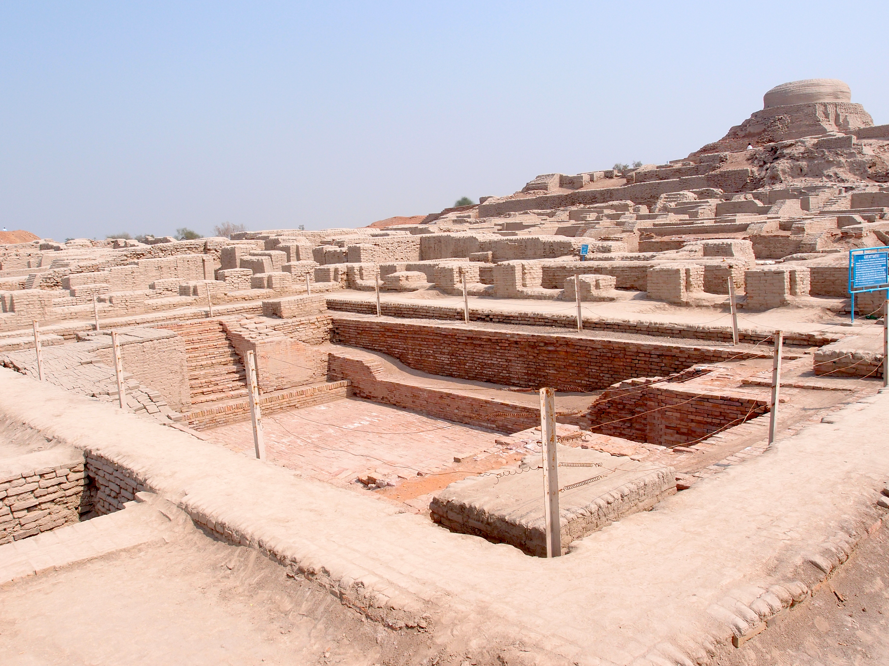
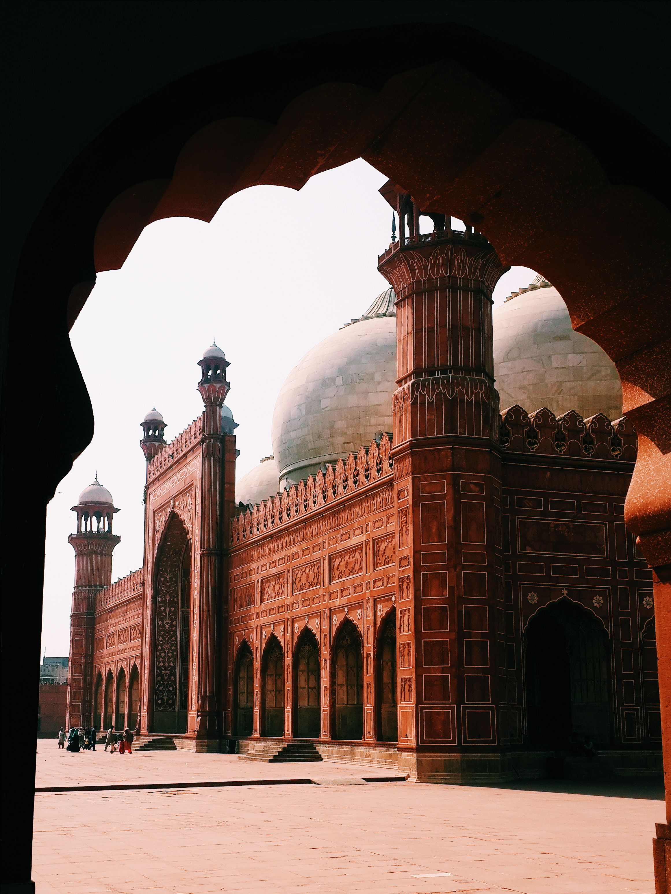

South & Heartland
City heat, 4,000-year-old streets, drum-filled shrine nights, and Mughal grandeur — a southern arc with texture, music, and stories you won’t get from the mountains alone.
A full Indus-to-Lahore culture circuit with hotel check-ins, site entries, and road hours spelled out. Heat, traffic, and shrine etiquette shape the pace — we plan meals and transfers around that reality.



Your trip starts the moment you clear immigration at Jinnah International.